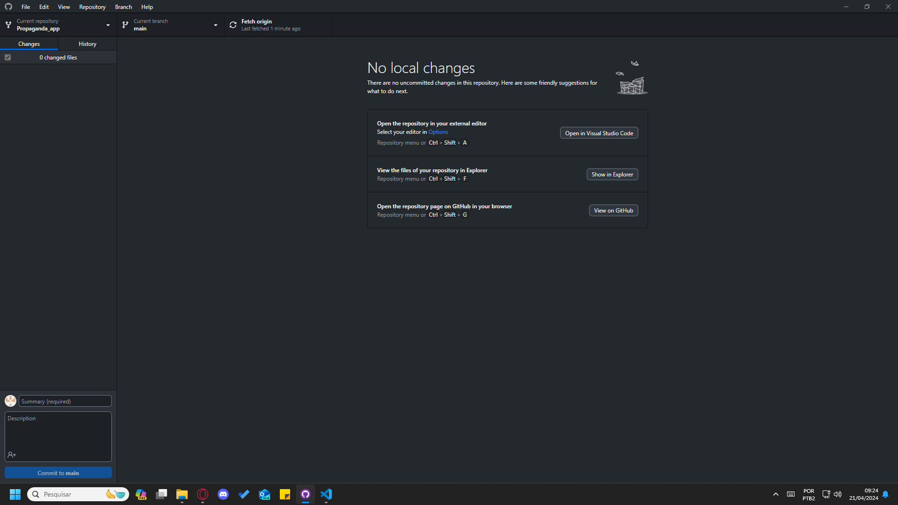
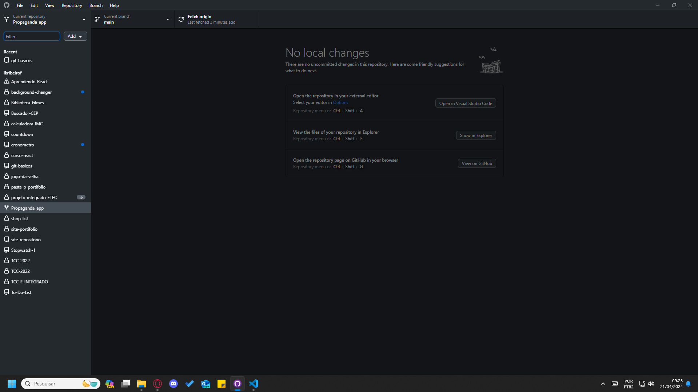
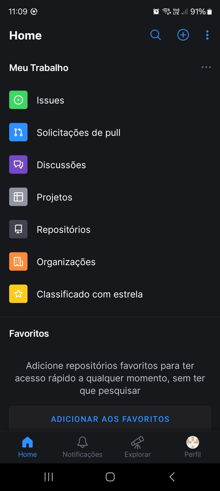
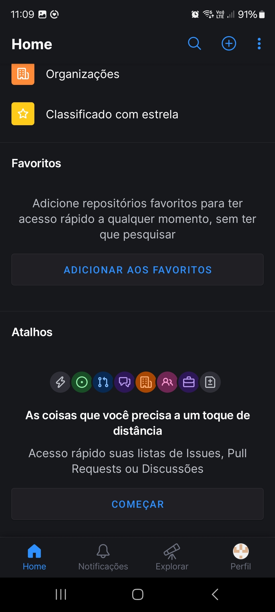
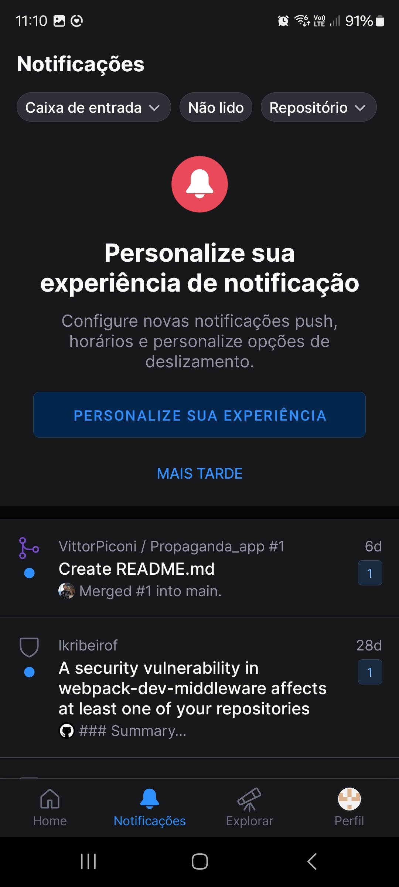
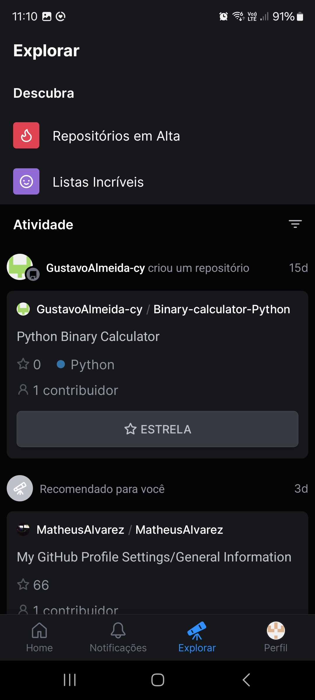

APP Git Hub
O GitHub Desktop é um aplicativo de desktop para o GitHub que permite que você gerencie seus repositórios e projetos de forma fácil e eficiente. Com o GitHub Desktop, você pode clonar repositórios, criar branches, fazer commits, e push de alterações para o GitHub. O GitHub Desktop também oferece suporte a pull requests, permitindo que você revise e faça merge de alterações de outros desenvolvedores. Além disso, o GitHub Desktop tem uma interface simples e intuitiva, tornando-o fácil de usar para desenvolvedores de todos os níveis. Com o GitHub Desktop, você pode gerenciar seus projetos do GitHub sem precisar usar a interface web, o que pode ser mais lento e menos eficiente. O GitHub Desktop é uma ferramenta essencial para qualquer desenvolvedor de software que deseja gerenciar seus projetos do GitHub de forma eficiente e colaborar com outros desenvolvedores.
Inicio
Na página inicial do github encontraremos o menu principal do app github desktop, onde temos os seguintes titulos File, Edit, View, Repository, Branch, Help. E logo abaixo temos 3 outras guias, sendo elas Current repository, Current branch e Fetch origin
|  |  |
| Na primeira vez que você iniciar o App GitHub desktop ele irá aparecer vazio, da mesma forma que a imagem acima. A partir daqui, você pode clonar repositórios, criar branches, fazer commits, e push de alterações para o GitHub. A página inicial do GitHub Desktop é a sua porta de entrada para gerenciar seus projetos do GitHub de forma eficiente e colaborar com outros desenvolvedores. | Nessa segunda imagem vemos como seria se você já tivesse aberto algum repositório e tivesse feito alterações nele, destacando onde tem adições no código, destacado em verde e aonde foi retirado linhas do código destacado em vermelho, e na parte esquerda da tela vemos a parte onde criamos os commits, e o histórico de commits. Além disso também temos o Fetch Origin por ele que subimos o commit para a branch que queremos. |
|  |  |
| Current Repository: Nessa parte podemos ver todos os projetos que já criamos, de primeiro momento podemos pesquisar qual repositório queremos ou apenas rolar para baixo, logo após temos o botão "add" onde podemos clonar, criar ou adicionar um repositório, e por fim temos os seus repositórios abertos ou alterados recentemente e todos os repositórios, seja eles privados, públicos ou apenas forks. | Current branch: Nessa parte temos as seguintes guias, Branches e Pull requests, na parte de Branches temos uma parte para pesquisar, um botão para criar uma nova branch, uma parte para mostrar a branch padrão, e por fim todas as branches disponíveis. |
| APP MOBILE | |
|---|---|
|  |  |
|  |  |
|
O GitHub Mobile é um aplicativo móvel para o GitHub que permite que você gerencie seus repositórios e projetos de forma fácil e eficiente a partir do seu dispositivo móvel. Com o GitHub Mobile, você pode clonar repositórios, criar branches, fazer commits, e push de alterações para o GitHub. O GitHub Mobile também oferece suporte a pull requests, permitindo que você revise e faça merge de alterações de outros desenvolvedores. Além disso, o GitHub Mobile tem uma interface simples e intuitiva, tornando-o fácil de usar para desenvolvedores de todos os níveis. Com o GitHub Mobile, você pode gerenciar seus projetos do GitHub sem precisar usar a interface web, o que pode ser mais lento e menos eficiente. O GitHub Mobile é uma ferramenta essencial para qualquer desenvolvedor de software que deseja gerenciar seus projetos do GitHub de forma eficiente e colaborar com outros desenvolvedores.
As funcionalidades do GitHub Mobile incluem: |
|